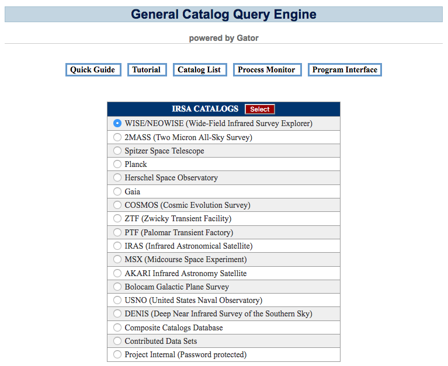
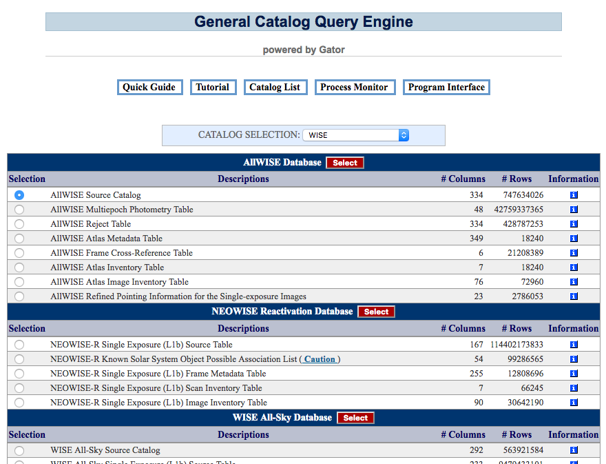
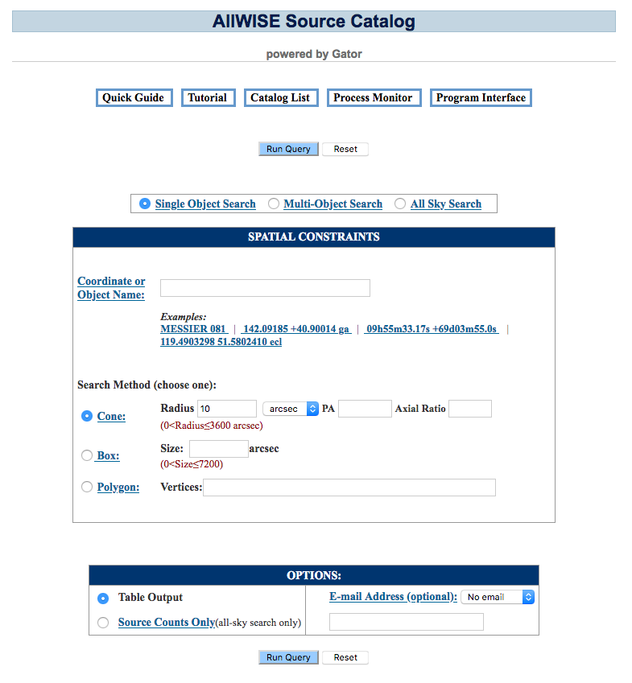
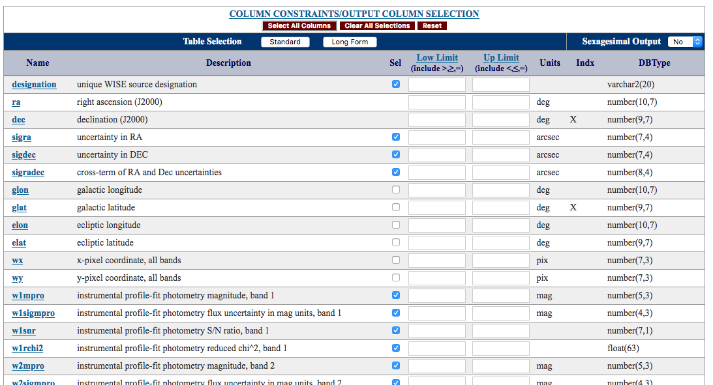

In summary, you must go through two interfaces, one for selecting a catalog (accessible from the "Catalogs Listing" button), and then another for building a query to extract data from that catalog. Submitting the job automatically brings up the process monitor, which reports the status of the job, and which gives the link to the returned data. These data are always written to an ASCII file of size up to about 2 GB, which is kept on-line for 72 hours after the job was started. (A processing summary is also sent to you by email if you request it.)
Contents of page/chapter:
+Selecting a Catalog
+Building a Query
+Single Object
+Search Methods
+Multi-Object
+All-Sky
+Search Options
+Output Column Selection
+Column Constraints
+Order of Results
+Running the Query
+Tips for Fast Queries
+Example Queries
The Catalog Search Tool begins with a list of the broad data sets available at IRSA. Choose one and click on the red "Select" button. Example:

You then have a list of the individual catalogs associated with your chosen data set, along with information on the size of each catalog and links to the relevant documentation. Choose a catalog and click on any of the red "Select" buttons. Example:

The next screen allows you to build a query for your selected catalog. It has four main parts, each of which is described in detail next.
Information about any given catalog is given in the catalog listing -- the number of columns, the number of rows, and links to more information about the catalog appear next to each catalog in the list.

There are three classes of constraints:
Enter the name or coordinates (decimal degrees or sexigesimal format)
of the center of your position search. If the input string cannot be
recognized as coordinates, then it will be sent first to NED , then to SIMBAD
, then to SIMBAD to attempt name resolution.
to attempt name resolution.
Examples of valid inputs include:
A Cone Search Query allows you to search for objects that lie within a cone defined by an ellipse projected on the sky. To define this ellipse, enter the following information (also see figure below).
| Parameter | Description | Is it required? | Notes |
| Radius | the radius of a circular projected search area (i.e. Axial Ratio =
1); OR the semi-major axis of an elliptical projected search area (i.e. Axial Ratio < 1). |
required | Radius must be positive; max value depends on the catalog being queried, and is shown in red on the search form. |
| PA | Position Angle in degrees of the semi-major axis of an elliptical projected search area, measured East from North | not required | default = 0 |
| Axial Ratio | semi-minor axis divided by semi-major axis for an elliptical projected search area | not required | Axial Ratio ≤ 1; default = 1 |
The Box Query returns objects that lie within a square centered on the search position. The width of the square is defined by the Size parameter, which must be positive. The maximum value depends on the catalog being queried. The maximum value is shown on the search form in red.
Search Methods: Polygon
The Polygon Query returns objects that lie within a convex (no interior angles larger than 180 degrees) polygonal area defined by up to 15 vertices. Each input vertex must be entered as a J2000 RA and Dec pair, in decimal degrees. Each vertex must be separated by a comma. The first vertex does not need to be repeated.
Example: Define a search area that is a one degree wide square. Vertices: 20.5 21.5, 20.5 20.5, 21.5 20.5, 21.5 21.5
First choose "Multi-Object Search". Then click on the "Browse"
button to upload a table that contains the following information in IPAC table file format  . This is just plain ASCII, with some formatting
requirements.
. This is just plain ASCII, with some formatting
requirements.
| Column Name | Is it required? | Description | Units |
| ra | required | right ascension | decimal degrees |
| dec | required | declination | decimal degrees |
| major | optional | semi-major axis of elliptical cone search, or radius of circular cone search | arcsec |
| ratio | optional | semi-minor axis divided by semi-major axis for elliptical cone search | none |
| angle | optional | position angle of elliptical cone search | degrees |
If you wish to have the same search parameters for every object in your input table, then you may specify these parameters once in the web interface. If you do not include the columns major, ratio, and angle in your input table, the default values are assumed.
Example 1: Search a circular area around each of two positions.First, make sure the radius box on the web interface is blank or "0". Next, create a table like this:
\ EQUINOX = 'J2000.0'
| ra | dec | major |
| double | double | double |
185.500000 15.500000 1000.
186.000000 15.000000 500.
The "major" column is optional; you can submit a table consisting just of RA and Dec. Since there is no column labeled "ratio," the value under major is interpreted as the radius of a circular search.
Example 2: Search an elliptical area around each of two positions.First, make sure the radius box on the web interface is blank or "0". Next, create a table like this:
\ Example of ellipse search \ EQUINOX = 'J2000.0' | ra | dec | major | ratio | | double | double | double | double| 185.500000 15.500000 1000. 0.25 186.000000 15.000000 500. 0.50
Since there is no column labeled angle, the default position angle of zero is assumed.
Example 3: Search an elliptical area around each of two positions, specifying the position angle.First, make sure the radius box on the web interface is blank or "0". Next, create a table like this:
\ Example of ellipse search \ EQUINOX = 'J2000.0' | ra | dec | major | ratio | angle | | double | double | double | double| double| 185.500000 15.500000 1000. 0.25 30 186.000000 15.000000 500. 0.50 60One-to-One Match
By default, all sources matching the query constraints (positional or otherwise) for a given input row will be returned in the output table. Conversely, if no sources match the query constraints for a given input row, then there will be no corresponding output rows. This can result in output tables which have a different number of rows than the input table. If the "One to One Match" box is checked, then the output table will have the same number of rows as the input table. If there are any objects that match the query constraints for a given input row, only the closest positional match will be returned in the output table. If no objects match the query constraints for a given input row, then the corresponding output row will be filled with nulls. The resulting table will be row-matched with the input table.
| Option | Description | Is it required? |
| Table Output | Click this option to return an IPAC table file |
Required for Single Object and
Multi-Object Searches. Optional for All-Sky Searches. |
| Source Counts Only | Click this option to return the number of sources matching your constraints. This is useful for estimating the size of a table result before actually requesting the table. This option is only supported for an all-sky search. | Optional |
| E-mail Address | To receive an e-mail containing a URL link to the results when your query has completed, select "Send email" from the pull-down menu, and enter your e-mail address in the space provided. | Optional |
By default, the service provides a "Standard" list of columns that you can choose to output. To see a list of all columns available, click on the "Long Form" button. Regardless of whether you choose "Standard" or "Long Form", you can further tailor the output by checking the boxes under the "Sel" column in the table. Example:

Some columns have no checkbox in the "Sel" column, and those are linked to the prior column, such as in the case of errors. If you are asking for a brightness measurement, you get the errors on that measurement "for free" along with your query.
To find out what columns are, click on the column name to be taken to additional documentation describing the column.
Some columns are indexed for fast access, and are indicated by an "X" in the "Indx" column. Queries with constraints on indexed columns run faster than queries with constraints on unindexed columns.
Ranges on any column can be specified by filling out the corresponding "Low Limit" and "Upper Limit" boxes. Each constraint must include one of the following comparison operators: =, <, <=, >, >=.
Blank spaces are ignored.
If the DBType of the column is "character", then the constraint entered must include a character in single quotes. When specifying a constraint on a column with a character DBType, "<" means earlier in the alphabet, and ">" means later in the alphabet.
When comparing dates, "<" means earlier and ">" means later.
Example:
The MSX6C catalog includes a source name field, called "name", encoded on the basis of the galactic position of the source. For example, the source with name = G090.5476+07.9157 is at l=90.5476 and b=+07.9157 in galactic coordinates. Entering the following constraint in either the upper limit or the lower limit field will retrieve all sources with the name G090.5476+07.9157.
='G090.5476+07.9157'
Entering the following constraint in the lower limit field will retrieve all sources with galactic longitudes greater than 90.4576 degrees.:
>'G090.5476+07.9157'
If you require more complicated constraints than allowed by the
spatial and column constraints described above, you can include them
in SQL  format in the "Additional
Constraints" box. The additional
constraints page describes the possiblities in detail and provides
examples of each. They include comparison operators (e.g. =, <,
>), ranges (between and not between), lists and set membership (in,
not in), pattern and character string matching (like, not like), nulls
and unknown values (is null and is not null), logical operators (and,
or, not), mathematical computations, and data constraints.
format in the "Additional
Constraints" box. The additional
constraints page describes the possiblities in detail and provides
examples of each. They include comparison operators (e.g. =, <,
>), ranges (between and not between), lists and set membership (in,
not in), pattern and character string matching (like, not like), nulls
and unknown values (is null and is not null), logical operators (and,
or, not), mathematical computations, and data constraints.
For single-source cone searches, the rows will be returned in order of distance from the requested position. For other single-source search regions or all-sky searches via the web interface, there is no particular order, but the output table has sorting capability (by clicking on the column name).
For table upload, the service orders by distance from each source.
We note here that, for API queries, you can control how the output is ordered. For single-source or all-sky searches, a parameter "order=(column_name)" may be used to order the rows by that column (in ascending order).
Once you have filled out each of the above sections, click on one of the blue "Run Query" buttons at the top and bottom of the screen. You can monitor the progress of the query, cancel the query, or look at the log file associated with a query by clicking on the "Process Monitor" button at the top of the screen.
The log file in the Process Monitor has been designed to allow users to monitor the status of their jobs, while providing IRSA sufficient information to trace the cause of any errors. This information is given in the square brackets, and contains messages returned by the DBMS. The status messages are generally self-explanatory, but if you run into problems and mail the helpdesk, we may ask for information from that log.Results are described on other pages; start from the Overview page.
Here are some tips for making your large catalog searches return faster: